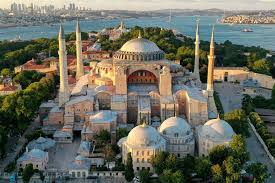
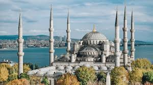
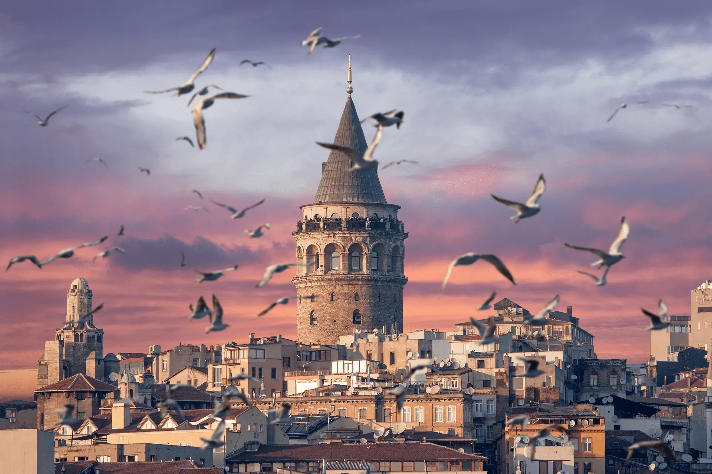

Ayasofya
Tarihi mimarisi ve kültürel önemiyle dünyanın en önemli yapılarından biridir...

Sultanahmet Camii
Mavi Camii olarak da bilinen bu yapı, altı minaresi ve göz alıcı çinileriyle ünlüdür...

Galata Kulesi
İstanbul'un en ikonik silüetlerinden birini oluşturan bu tarihi kule, eşsiz manzaralar sunar...